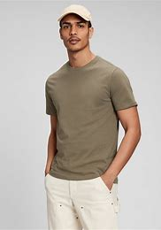
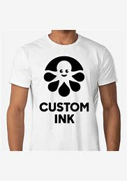

We can plain top , Embroider, and label New Shirts .. Click Products to see our Process Itron has been open for 20 years. a span of 5 years "top producers of Cotton"
ITRON i-Tron-T-shirts
Compatible
 To refurbish u must Select CUSTOM DESIGN At itron we make and ship T-shirt. Click Products to see our Process Itron has been open for 20 years. a span of 5 years "top producers of Cotton"We can plain top , Embroider, and label New Shirts .